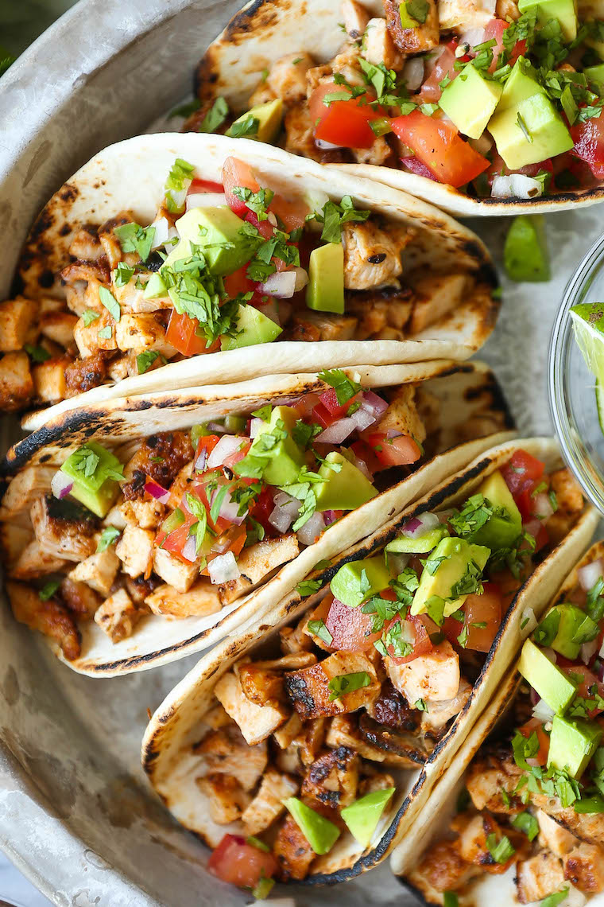

Recipe for Chicken Tacos

Description:
Chicken Tacos are a flavorful Mexican dish featuring seasoned and grilled chicken served in warm tortillas with a variety of toppings.
Ingredients:
500g boneless, skinless chicken thighs, thinly sliced
1 tablespoon chili powder
1 teaspoon ground cumin
1 teaspoon paprika
Salt and pepper to taste
8 small flour tortillas
Preparation Steps:
In a bowl, mix the chicken with chili powder, cumin, paprika, salt, and pepper, ensuring even coating.
Heat a grill or pan over medium-high heat and cook the chicken until thoroughly cooked and slightly charred.
Warm the tortillas on the grill for a few seconds on each side.
Serve the grilled chicken in the tortillas and garnish with your favorite toppings like salsa, guacamole, shredded lettuce, and cheese.